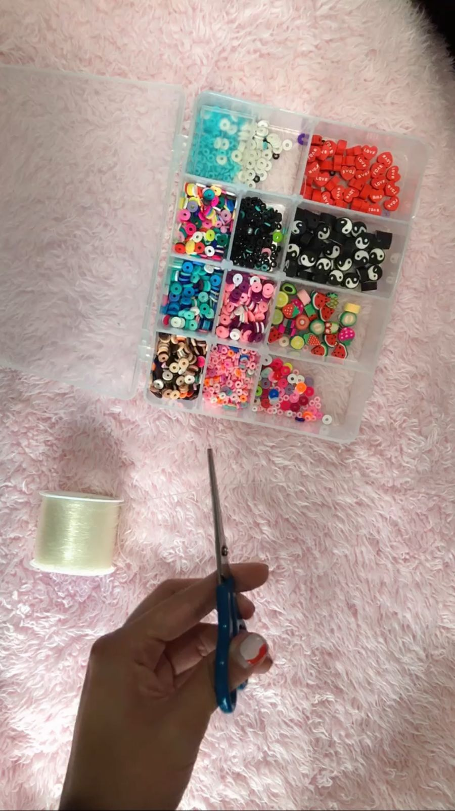
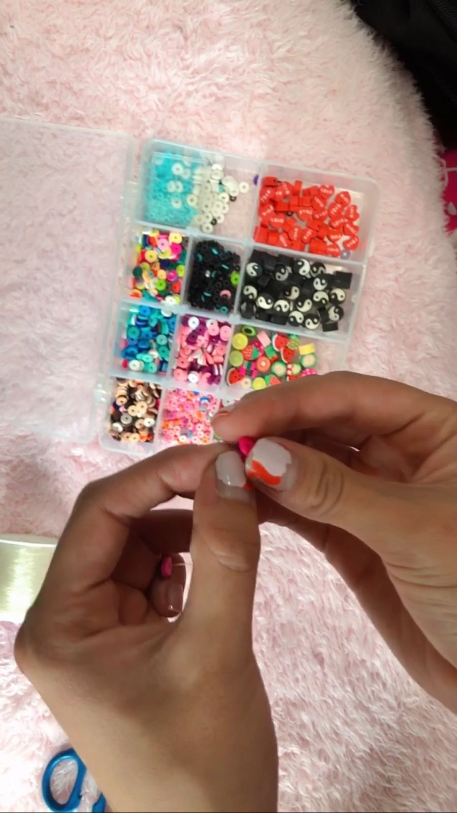
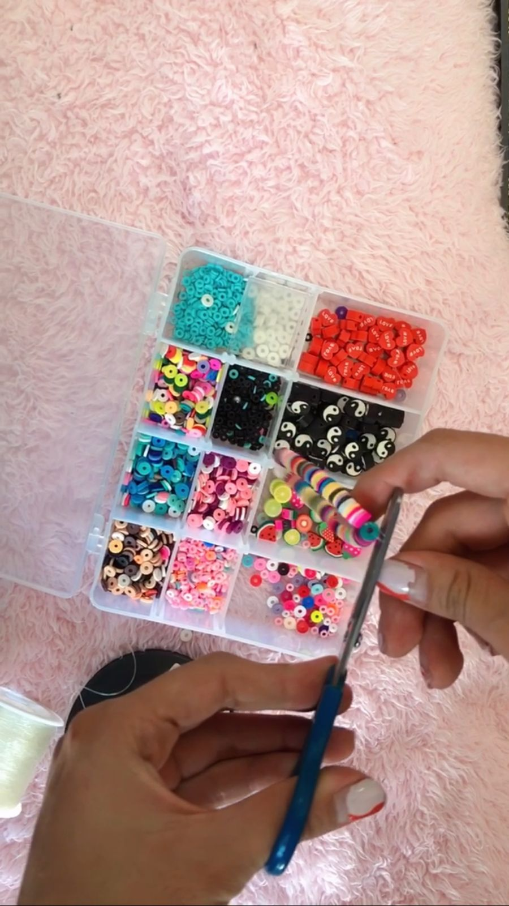
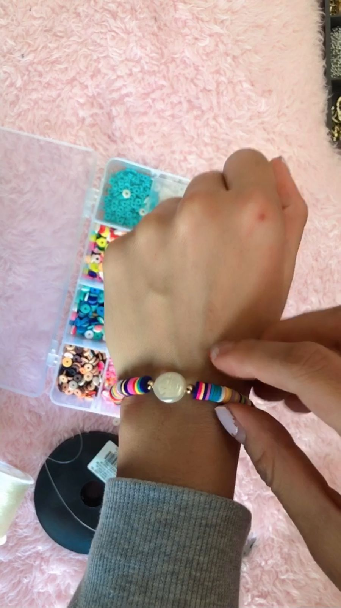

Pasos
Tutorial
Materiales
Pasos
Corta un 30 cm de hilo elástico

Agrega las figuras de acrílico en el orden de tu preferencia

Mide el largo de tu pulsera con tu mano, si está en la medida que deseas, haz un nudo para cerrar la pulsera
TIP: Haz varios nudos para reforzar muy bien tu pulsera
Recorta el exceso de hilo

¡Combina tu pulsera con tus outfits del día!
